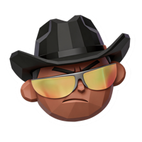

Handoff stream
Every delegation with the exact brief that was passed, so you can see why a task moved.
Example conversation
You describe the work once, to the Scrum Master. It sizes the request and puts it on a Kanban board as cards. The Tech Lead, Developer and QA pick those cards up and finish them, and you watch each handoff in a live office and on the board.
You should not have to run a team of agents by hand. Talk to one routine and the team finishes the task.
Your session hands the request to the Scrum Master and only dispatches from there. It picks the platform team (Web, Android or iOS). A small change goes straight to that team's Developer with its Tech Lead reviewing; a bigger one goes to the Tech Lead, who writes the contract and brings in QA. Instructions, decisions and results live on the cards, so no one works from a pasted prompt.
Usually all of that is a scrolling terminal. Virtual Office reads the sessions your tools already record and shows who is working, on which card, what they handed off and why.
When the Scrum Master sizes a request as small (one to three files, no change to a shared type, API, payload or stored data), it skips the contract. One card goes straight to the platform's Developer (web-dev, android-dev or ios-dev), who maps the impact first, and that platform's Tech Lead reviews it.

Scrum Master Developer Tech Lead reviewsNext to the floor plan and the board, the portal shows the conversation between agents, the tools they used, the code they changed and the time and tokens each role spent. A finished requirement can be replayed on the floor plan, and first-time users can watch a short demo.
Every delegation with the exact brief that was passed, so you can see why a task moved.
Which tools each agent reached for: terminal commands, MCP tools, handbacks and file writes, counted per call.
mcp__ tool is counted as MCP; write_to_file as Write.The diff each agent produced, filed under the card and the role that made it.
Work time is logged per role while it is active, with the token usage your tools recorded.
A Replay button on a finished requirement plays its handoffs on the floor plan, with decisions, reviews and results as captions. Save as video keeps a recording. Nothing is written to the board.
New to the office? A Watch demo button on the floor plan walks a scripted request through your own team, from the Scrum Master to the people who build and test it and back. It runs in the browser and saves nothing.
Roles, skills and rules live as plain Markdown and YAML in your repository, and Team Studio in the portal edits the same files. One command writes them out in the format each AI tool reads, including the rule that the main session only dispatches, so nothing drifts between tools.
The server listens on 127.0.0.1 and refuses requests from other websites, so a page you visit cannot read your board.
Jira and Confluence tokens are saved to a gitignored file readable only by you. The portal never displays them.
There is no mock data. Every card, handoff and token count comes from a real session, and 33 test suites guard it in CI. The Watch demo is labelled as a simulation and never touches your board.
The session you type into only dispatches work. In Claude Code a hook stops it from editing files, so every change, even a one-line fix, goes to the Scrum Master and gets reviewed.
Counted from main at 7b64e94 (pull request #23) on 17 Oct 2026, 17:30: commits from git log, merged pull requests on GitHub, SKILL.md files in .agents/skills, suites in npm test, tool adapters in server/adapters.
Open your project folder in a terminal. New or existing, any stack.
Run the command. The portal finds your agents, or helps you pick an Android, iOS or Web team (Scrum Master, Tech Lead, Developer and QA), or all three with the Scrum Master routing by platform, that you can adjust in Team Studio.
Ask as usual in Claude Code, Codex, Gemini or OpenCode. Your session hands the request to the Scrum Master, and the office fills in as your agents work.